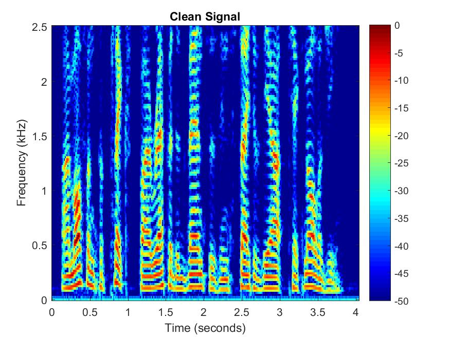
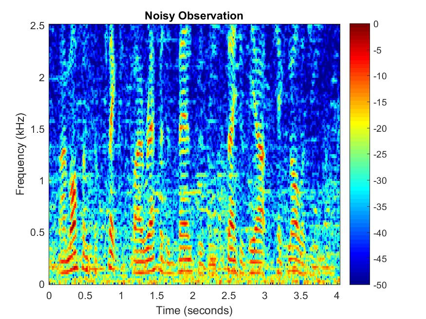
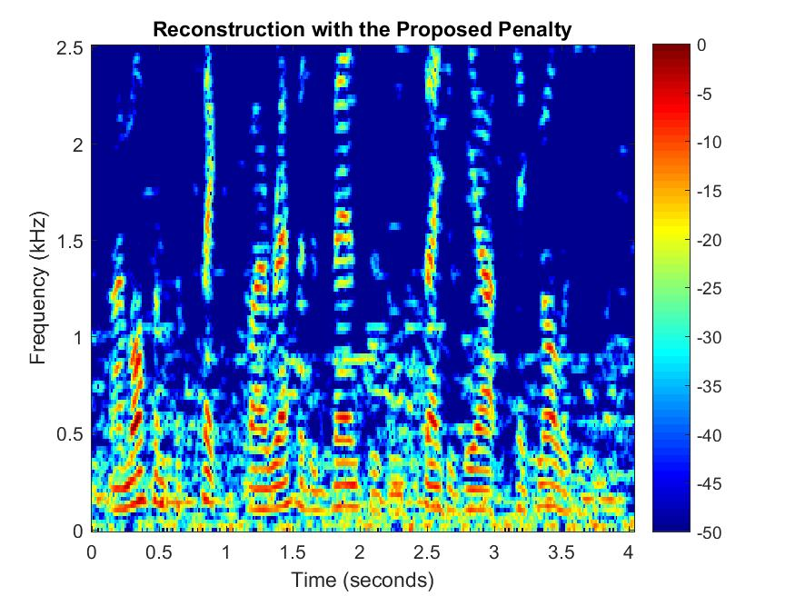
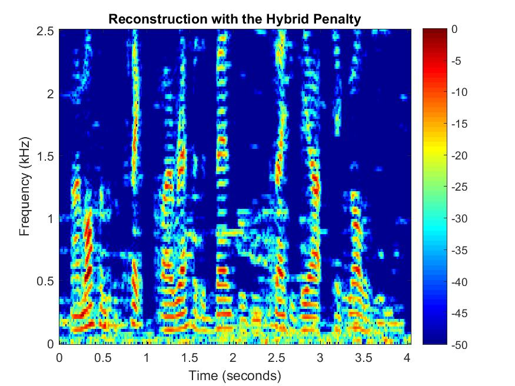
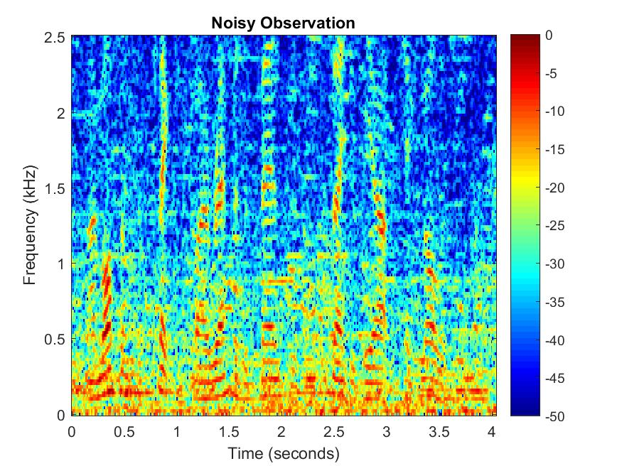
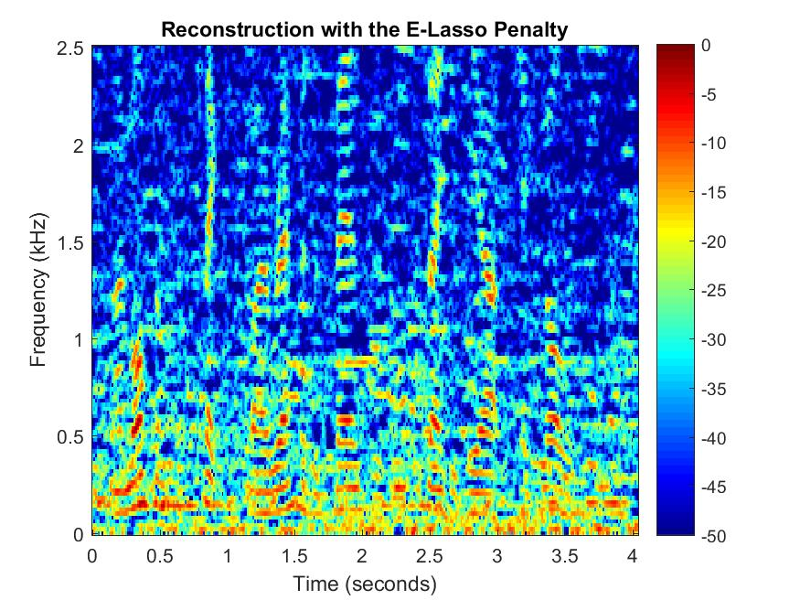
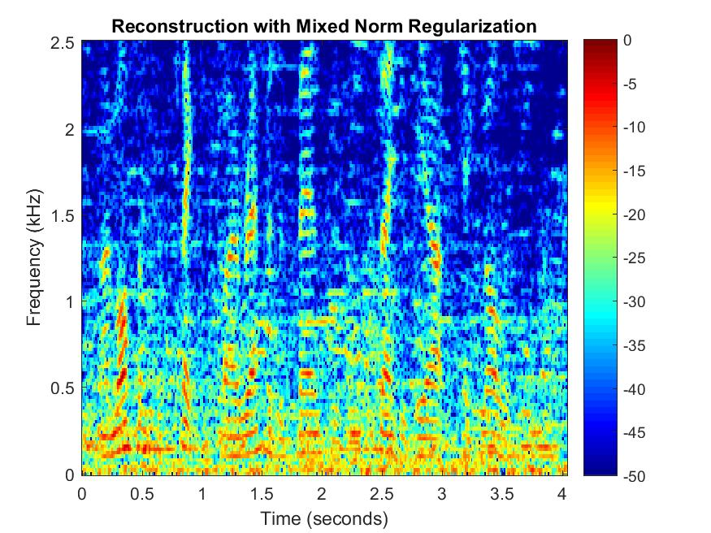
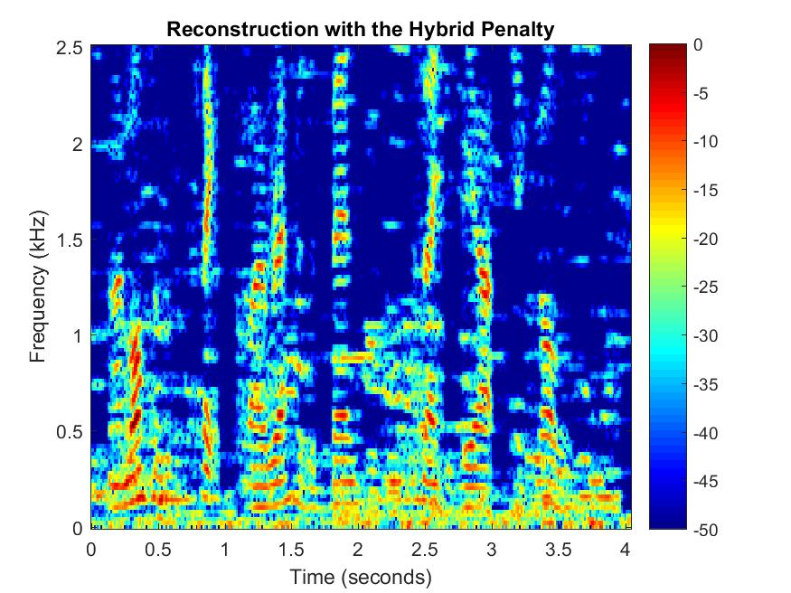
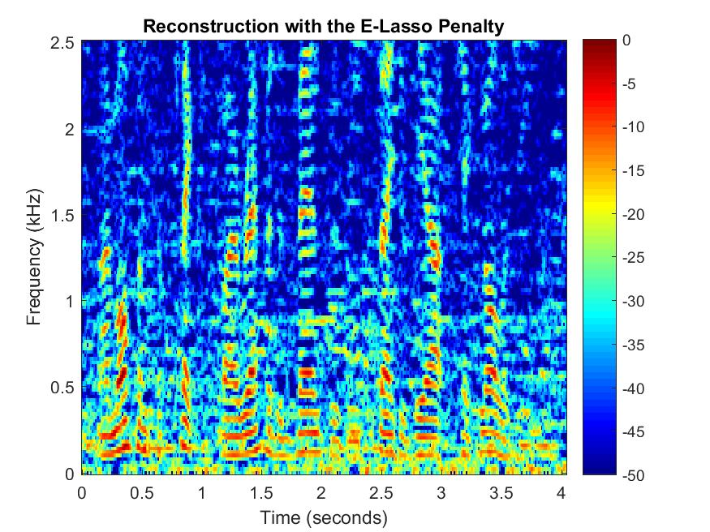
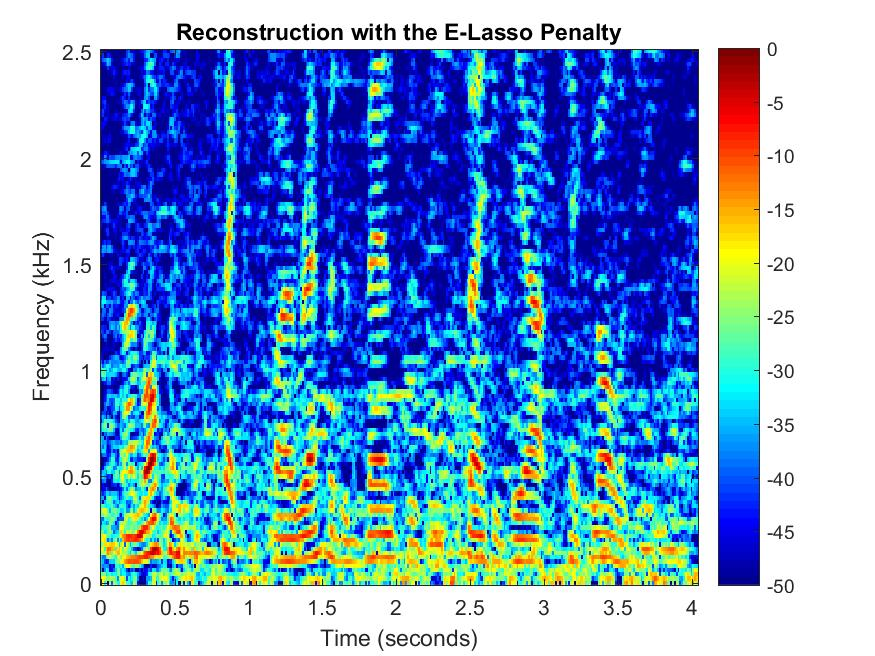

A Penalty Function Promoting Sparsity Within and Across Groups
Software
The file SWAG.zip contains Matlab codes used in the experiments from the manuscript "A Penalty Function Promoting Sparsity Within and Across Groups", by I. Bayram and S. Bulek, 2016.
Below are some results from the audio denoising experiment from the manuscript.
In the manuscript, due to lack of space, we show the results only for input SNR = 5 dB. Here we also provide the sound files and spectrograms for when input SNR = 0 dB.
The original signal is speech but it is degraded by additive ambient noise.
Noisy Observation, SNR = 5 dB
Here are the reconstructions obtained by the methods described in the manuscript.
l1 Norm Regularization, Output SNR = 6.42 dB
E-Lasso Regularization, Output SNR = 6.54 dB
Proposed Penalty, Output SNR = 6.67 dB
Mixed (l2,1) Norm Regularization, Output SNR = 6.09 dB
Hybrid (proposed + l2,1) Penalty, Output SNR = 7.55 dB
Below are the spectrograms of the signals



Below are the noisy signal and the denoised ones using different methods for input SNR = 0 dB.
Noisy Observation, SNR = 0 dB
l1 Norm Regularization, Output SNR = 2.48 dB
E-Lasso Regularization, Output SNR = 2.63 dB
Proposed Penalty, Output SNR = 2.64 dB
Mixed (l2,1) Norm Regularization, Output SNR = 2.38 dB
Hybrid (proposed + l2,1) Penalty, Output SNR = 3.86 dB
 

Audio Denoising Experiment
 
